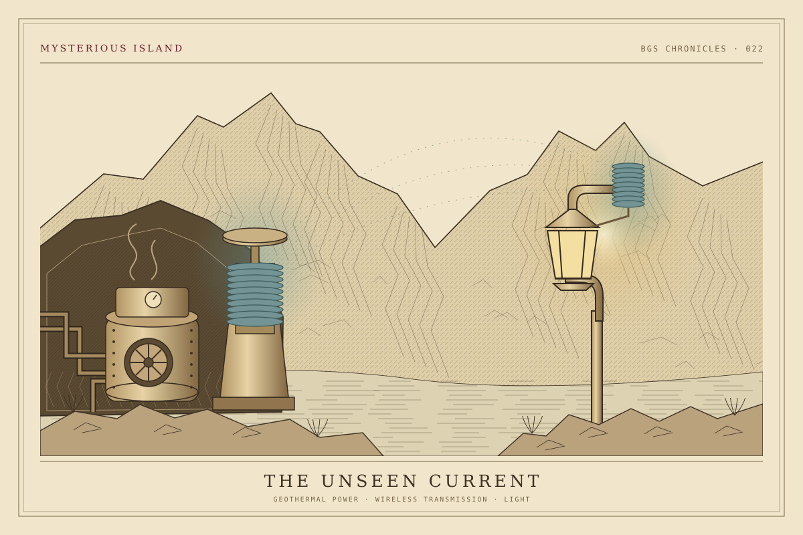

Mysterious Island
ミステリアスアイランド――ネモ船長の秘密基地を歩く岩の通路を抜けると、切り立った壁の内側に水面がひらけます。停泊する潜水艦、水辺をまたぐ鉄の構造物、岩肌に据えられた灯り。ミステリアスアイランドは、火山のカルデラに隠されたネモ船長の科学基地です。
ここには、発見へ向かう探究と、その探究を支える暮らしが息づいています。通路の防護ネットから食堂の発電機まで、島の風景は、それぞれの役割を持ってつながっています。
I. 海図にない火山島
南太平洋のどこか、海図に記されていない火山島。外界から身を隠す場所を求めたネモ船長は、今も活動を続けるプロメテウス火山のカルデラに科学基地を築きました。島を包む岩壁は、研究所と海とをひとつの懐に収めています。
時は1870年代。長いあいだ外の社会と距離を置いてきた船長は、自らの発見を一部の人々と分かち合うことを決意します。世界各地の科学者や研究者が招かれ、閉ざされていた基地に訪問者を迎える日々が始まりました。
不可能とされてきたことを、研究によって可能にする。ここで行われている探究は、海の深みから地球の内部にまで及びます。その探究を支えているのが、水辺のドック、岩壁に沿う通路、発電所、そしてクルーたちの働く施設です。
II. 「誰でもない」科学者
ネモという名は、ラテン語で「誰でもない」を意味します。船長はどの国にも属さず、自らの正義に従って生きています。島の主を示すのは国家の旗ではなく、あちこちに残されたNの印です。
岩に囲まれた基地には研究成果があふれていますが、船長自身は容易に姿を見せません。声を耳にした者はいても、その姿を見た者はいないといわれています。どこかに飾られた肖像画は、その面影を知る数少ない手がかりです。
この島を歩くとき、主の仕事は本人に先んじて目に入ります。水面に浮かぶ船、作業を支える機械、灯りをともすコイル。船長の姿を探すよりも先に、その発明と、発明を使い続ける人々の暮らしに出会うことになります。
III. 火山と鉄で築かれた基地
プロメテウス火山は、研究所が置かれた後も静まってはいません。煙を上げる溶岩や、水面の噴気孔から吹き出す火山ガスが、地下の活動を伝えています。カルデラの水辺に立つと、科学の拠点が大地の営みと隣り合っていることがわかります。
基地には、重厚な鉄の支柱や梁、パネルが使われています。大きな鉄の部材と、火山が残した不規則な岩肌。研究のための構造物は、火口の地形や自然の営みを受け止めながら組み合わされています。鉄を組み、足場を築く技術が、この険しい土地での活動を支えています。
人々が行き来する高架通路には、火山から飛来する溶岩に備えた頑丈な防護ネットが設けられています。頭上の網は、この島で移動する人々を守る設備です。手すりや通路を眺めると、険しい場所を研究の拠点に変えるための備えまで見えてきます。
一方、Nの印を伴う立入禁止の看板も残されています。訪問者を迎えるようになっても、基地のすべてが開かれたわけではありません。歩ける通路と、その先に続く調査の領域。その境目もまた、研究が続いている島の一部です。
IV. ノーチラス号が帰る水辺
カルデラの水面に停泊する潜水艦ノーチラス号は、ネモ船長とその部下たちの船です。鉄に守られた艦内では自給自足ができ、独自の発電によって航行します。岸からその姿を眺めると、ここが海への出発点でもあることを実感します。
船のそばで水面に上がる泡は、クルーたちが整備を続けている気配を伝えています。停泊中の船も、次の航海に備える仕事のただ中にあります。水上に見えている船体の内側では、岸辺からは見通せない艦内の営みが続いているのでしょう。
ドックは、帰還した船を係留するだけの場所ではありません。海で働く船と、陸でその仕事を支える施設が出会う場所です。正面にある食堂まで視線を移すと、船の整備とクルーの休息が、同じ水辺でつながっていることに気づきます。
V. 海と空へ伸びる探究
ガントリークレーンに吊られた小型潜水艇には、NEPTUNEの文字が記されています。これはネモ船長専用のネプチューン号。ローマ神話の海の神にちなむ名を持つ、海底探査のための船です。
水辺には、大きな潜水艦だけでなく小型艇も扱えるクレーンが備わっています。船そのものに加え、船を持ち上げ、整え、送り出す設備にも目を向けると、探査を支える港の働きが見えてきます。
空へ目を転じると、大きなNを描いた着陸地点があります。ここへ降りるのは、船長専用の飛行機アルバトロス号です。地面の擦れた跡は、その車輪が着陸の際に残したもの。海に浮かぶ船から空を行く機体まで、探究の道はひとつに限られていません。
VI. 火山の力と、電線のない灯り
基地を動かす力は、火山の内側から得られます。ヴォルケイニア・レストランにある地熱発電所は、島の科学基地へエネルギーを供給しています。食事をとる場所のそばに発電機が据えられているのも、この施設の役割によるものです。
発電機の隣には、上部に青く光るコイルを備えた変圧器があります。ネモ船長は、ここから電力を空気中へ送り出します。離れた装置へ、電線を引かずにエネルギーを届ける無線送電です。
島の照明を見比べると、電線のあるものと、電線のないものがあります。後者の背面にある青いコイルは、空気中から電気エネルギーを受け取るための装置です。発電所から送り出された力は、ここで光へと変わります。
洞窟の発電機と、岩肌にともる灯り。そのあいだを結ぶ線は見えなくても、両者は同じ働きの中にあります。島を巡る機械や装置の多くを生み出した船長の仕事は、特別な探査の瞬間だけでなく、道を照らす灯りにも及んでいます。

VII. クルーの食卓にも、島の仕組み
研究と整備の続く基地には、働く人々の食事も欠かせません。同じ島の飲食施設でも、その始まりをたどると、それぞれが異なる仕事を担ってきたことがわかります。
ヴォルケイニア・レストランは、クルーの食堂を兼ねていた地熱発電所を、基地に招かれた科学者たちも利用できるように改めた場所です。発電だけでなく、調理にも火山の地熱蒸気を利用しています。食卓に並ぶ中華料理の向こうに、地下から力を取り出す基地の仕組みがあります。
ノーチラスギャレーは、潜水艦を整備するクルーのため、ドックの正面に設けられた食堂です。島が訪問者に開かれているときには、訪れた人々にも軽食や飲み物が振る舞われます。船を眺められる場所に席があることにも、整備の現場に寄り添って生まれた食堂の来歴が重なります。
リフレッシュメント・ステーションは、仕事が忙しく、ゆっくり食事をとれない人々のためのフードワゴンです。食堂で腰を落ち着ける時間がなくても、手軽に食べられるようにと、ネモ船長が用意しました。研究者を招く華やかな一面のそばに、働く仲間の時間を考えた小さな心配りも残されています。
VIII. 修理工場に残る航海の記憶
ノーチラスギフトの建物は、もともとノーチラス号の修理に使われていました。世界の海を探る船を支えてきた場所が、基地の公開に合わせ、島を訪れた記念の品を持ち帰れる店へと姿を変えたのです。
店内やショーウインドウには、船の部品、ダイビングスーツ、ネモ船長の発明品などが残されています。品物を選ぶために足を止めた場所にも、潜水艦を整え、海へ送り出してきた工場の面影があります。
食堂を兼ねる発電所、ドックに向かい合う食事の場所、修理施設から生まれた店。それぞれをたどると、訪問者を迎える今の姿の下に、クルーと船のために働いてきた基地の時間が重なって見えてきます。
IX. Nの印と、変わり続ける島
船長が大切にする言葉は、Mobilis in Mobili。「モビリス・イン・モビリ」、すなわち「変化をもって変化する」です。外の社会から離れた島でも、その探究は止まっていません。
島には、立ち入れる通路、整備を待つ船、空への着陸地点、火山の熱を使う食卓があります。そこにあるものを、ひとつずつ仕事のつながりとして眺めれば、Nの印は、機械と人々の営みを結ぶ目印にもなります。
高架の上から水辺を見下ろし、灯りの裏側へ視線を移す。遠くからは岩山の内側に隠れていたものが、歩くほどに別々の働きを持ちはじめます。ネモ船長の秘密基地は、今日も火山の息づかいの中で、次の発見を迎える支度を続けています。
参考資料（13件）
- 東京ディズニーリゾート「8つのテーマポート」／“Tokyo DisneySea Overview”（日本語・英語）
- Disney Vacation Channel “Disney Sea — Mysterious Island”（英語）
- 東京ディズニーリゾート・ブログ「ネモ船長の秘密基地のヒミツ！」（2016年9月30日）
- 東京ディズニーリゾート・ブログ「ミステリアスアイランドに関するちょっと細かいストーリー：その1」（2021年6月24日）
- 東京ディズニーリゾート・ブログ「ミステリアスアイランドに関するちょっと細かいストーリー：その2」（2021年7月30日）
- 東京ディズニーリゾート・ブログ「時間や季節によって変わる、東京ディズニーリゾートのいろんな表情。～ミステリアスアイランド編～」（2017年2月9日）
- 東京ディズニーリゾート「ヴォルケイニア・レストラン」／“Vulcania Restaurant”（日本語・英語）
- 東京ディズニーリゾート「ノーチラスギャレー」／“Nautilus Galley”（日本語・英語）
- 東京ディズニーリゾート「リフレッシュメント・ステーション」／“Refreshment Station”（日本語・英語）
- 東京ディズニーリゾート「ノーチラスギフト」／“Nautilus Gifts”（日本語・英語）
- D23 “20,000 Leagues Under the Sea: 70 Years of the Mightiest Motion Picture of Them All!”（2024年、英語）
- Themed Entertainment Association “Zsolt Hormay (2019)”（英語）
- DEJIKI “Tokyo DisneySea – Mysterious Island”（2014年4月29日、英語・現地写真による景観確認）
資料確認日：2026年10月30日